그냥 AI와 에이전트는 무엇이 다를까요
영어 공부에 AI를 쓸 때 "이 문장 해석해 줘", "이 단어 뜻이 뭐야?"로만 묻고 있다면 AI가 할 수 있는 일의 아주 일부만 쓰는 거예요. 영상이 보여 주려는 건 AI를 번역기가 아니라 나를 아는 과외 선생님으로 바꾸는 방법이에요. 내 레벨을 알고, 어제 틀린 걸 기억하고, 매일 나한테 맞는 숙제를 내주는 선생님이요.
물으면 답하는 AI, 규칙대로 움직이는 에이전트
영상은 어려운 말 없이 한 줄로 정리해요. 그냥 AI는 물어보면 대답하는 존재이고, 에이전트는 역할과 규칙을 미리 정해 준 AI예요.
그냥 AI는 길에서 우연히 만난 원어민과 비슷해요. 친절하게 답해 주지만 내 영어가 어느 정도인지, 뭐가 약한지, 어제 뭘 공부했는지는 몰라요. 그러니 답도 누구에게나 할 법한 일반론에 머물러요. 에이전트는 나만 맡는 선생님이라, 아래 화면처럼 학생에 대한 판단이 미리 들어가 있어요. 화면 속 수치는 스피킹 52, 문법 96처럼 강약이 뚜렷하고, 자막은 그걸 "문법은 괜찮은데 스피킹이 약하다"는 한 문장으로 요약해요.
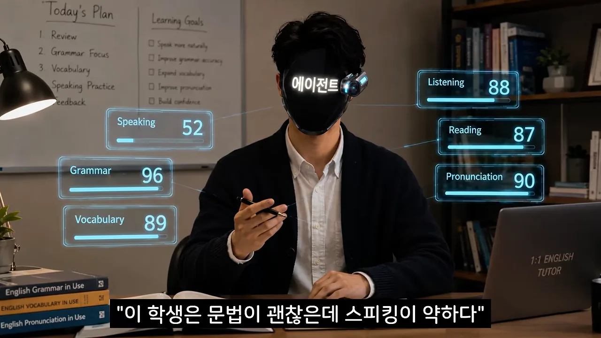
좋은 점은 이 세팅을 딱 한 번만 하면 된다는 거예요. 매번 내 상황을 다시 설명할 필요 없이, 만들어 둔 뒤로는 "수업 시작하자" 한마디면 돼요. 코딩은 필요 없고 복사해서 붙여 넣기만 하면 돼요.
준비물: ChatGPT 또는 Claude 계정 하나
영상은 두 서비스를 아래처럼 비교해요. ChatGPT에서 나만의 AI를 만드는 '맞춤형 GPT(Generative Pre-trained Transformer)'는 유료 플랜에서만 쓸 수 있고, Claude는 '프로젝트'라는 기능을 무료 계정에서도 쓸 수 있다고 해요. 이름만 다르고 하는 일은 거의 같아서, 영상은 누구나 무료로 따라 하도록 Claude로 시연해요.
Claude 프로젝트 만들고 지시문 넣기
만드는 과정은 버튼 몇 번이면 끝나요. 영상의 시연 화면을 순서대로 따라가 볼게요.
- Claude 왼쪽 메뉴에서 '프로젝트'를 누르고 오른쪽 위 '새 프로젝트'를 눌러요 '프로젝트 생성' 창이 떠요
- '무엇을 작업 중이신가요?' 칸에 이름을 적고 '프로젝트 만들기'를 눌러요 — 영상은 '내 영어 선생님'이라고 지었어요. 이름은 언제든 바꿀 수 있어요.
- 프로젝트 화면의 '지침'(영어 화면에서는 instructions) 칸을 열어 지시문을 붙여 넣고 '지침 저장'을 눌러요
첫 화면에서는 프로젝트 목록 오른쪽 위의 검은 '새 프로젝트' 버튼을 찾으면 돼요.
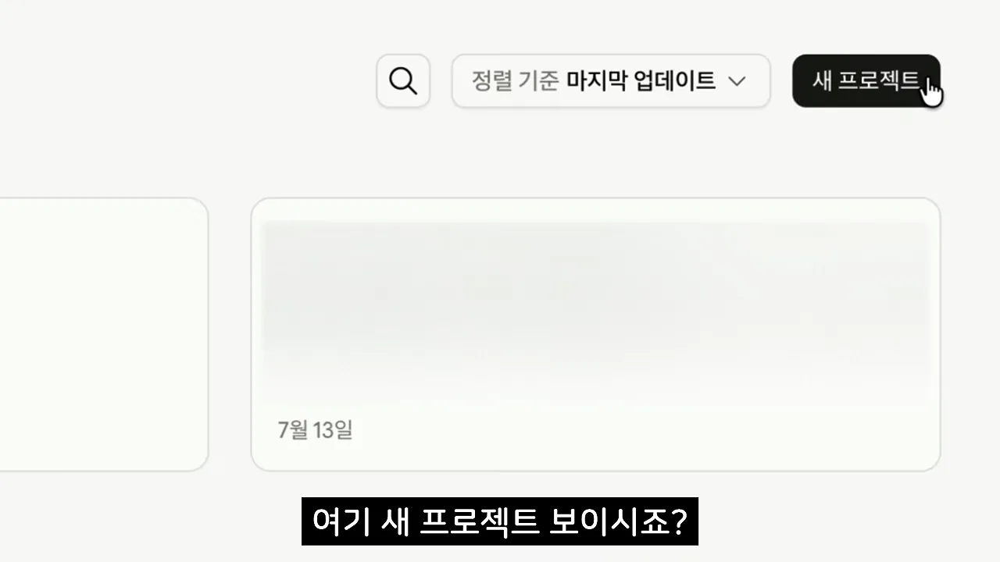
누르면 이름과 목표를 묻는 창이 떠요. 영상은 첫 칸에 '내 영어 선생님'만 넣고 아래 목표 칸은 비워 둔 채 바로 만들어요.
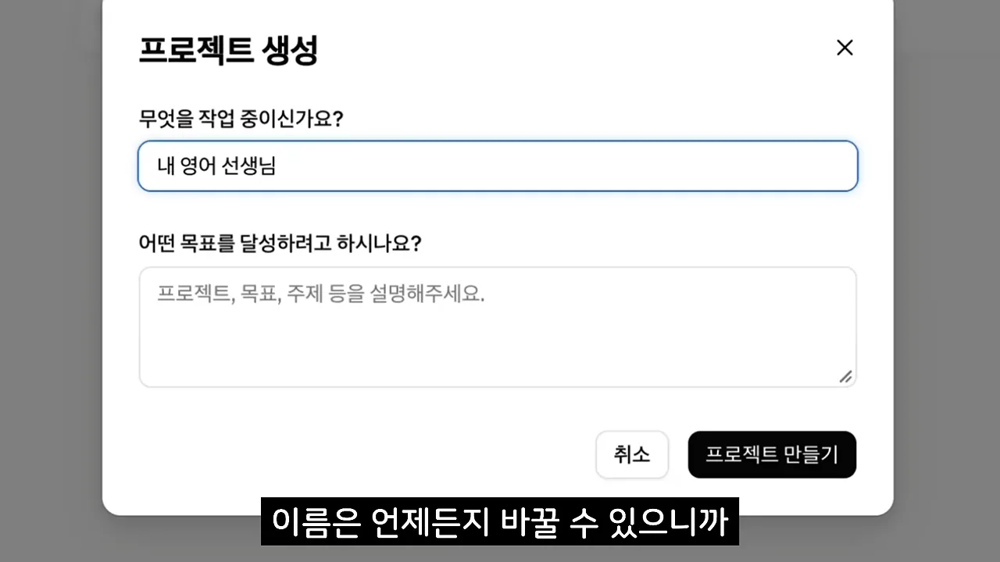
지시문: 학생 정보 세 줄과 수업 규칙 여섯 줄
이제 핵심인 지시문이에요. 선생님에게 "너는 이런 선생님이야"라고 알려 주는 글이고, 프로젝트 지침 칸에 들어가요. 아래 화면에서 위쪽 [학생 정보]가 나에 대한 설명, 아래쪽 [수업 규칙]이 선생님의 행동 방식이에요. '← 본인에 맞게 수정'이라고 적힌 두 줄이 바꿔야 할 곳이에요.
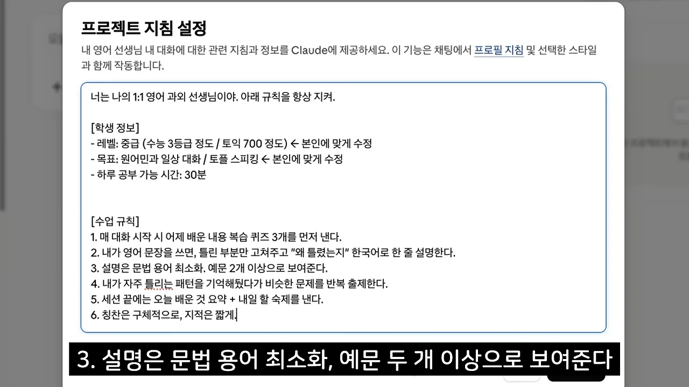
화면에 나온 지시문을 그대로 옮기면 이래요. 그대로 복사해서 학생 정보만 내 것으로 바꿔 쓰면 돼요.
너는 나의 1:1 영어 과외 선생님이야. 아래 규칙을 항상 지켜.
[학생 정보]
- 레벨: 중급 (수능 3등급 정도 / 토익 700 정도) ← 본인에 맞게 수정
- 목표: 원어민과 일상 대화 / 토플 스피킹 ← 본인에 맞게 수정
- 하루 공부 가능 시간: 30분
[수업 규칙]
1. 매 대화 시작 시 어제 배운 내용 복습 퀴즈 3개를 먼저 낸다.
2. 내가 영어 문장을 쓰면, 틀린 부분만 고쳐주고 "왜 틀렸는지" 한국어로 한 줄 설명한다.
3. 설명은 문법 용어 최소화. 예문 2개 이상으로 보여준다.
4. 내가 자주 틀리는 패턴을 기억해뒀다가 비슷한 문제를 반복 출제한다.
5. 세션 끝에는 오늘 배운 것 요약 + 내일 할 숙제를 낸다.
6. 칭찬은 구체적으로, 지적은 짧게.학생 정보는 솔직하고 구체적으로
영상이 가장 힘줘 말하는 곳이 학생 정보 세 줄이에요. 이 세 줄이 선생님이 나에 대해 아는 전부라서요. 아래 화면은 흔한 실수를 보여 줘요. 실제로는 모의고사 5등급인데 자존심 때문에 3등급이라고 적으면 안 된다는 거예요.
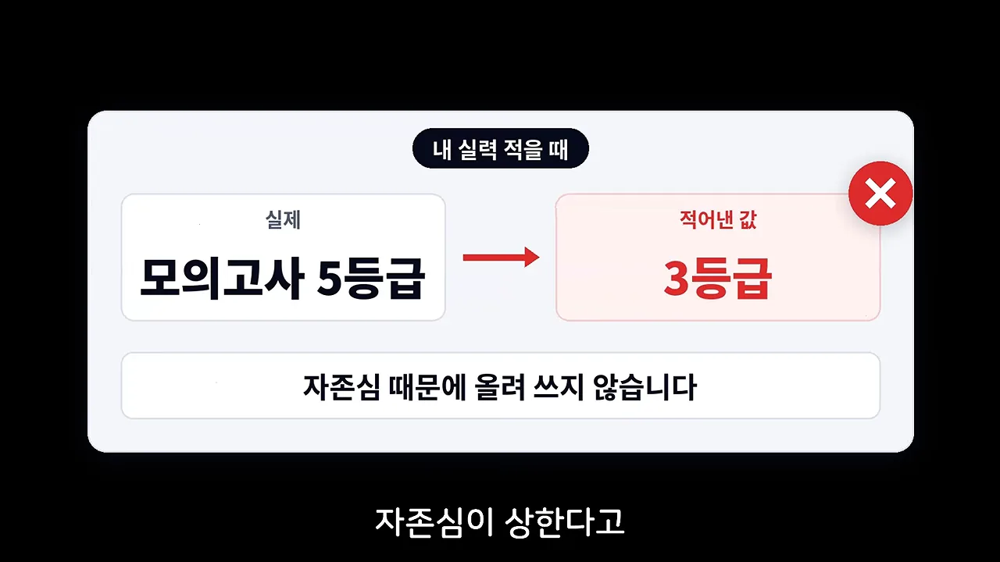
왜 어긋나면 안 되는지는 다음 화면이 양쪽으로 보여 줘요. 왼쪽 빨간 막대는 실제보다 높게 쓴 경우로 수업 난도가 100까지 올라가 따라가지 못하고, 오른쪽 회색 막대는 낮게 쓴 경우로 난도가 20에 머물러 시시해서 안 하게 돼요.
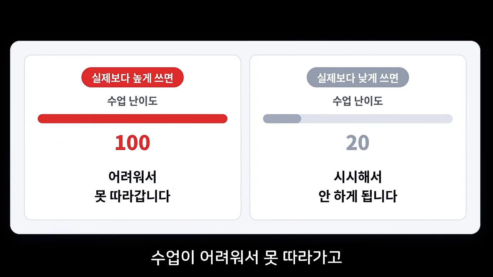
목표도 마찬가지예요. 왼쪽의 '영어 잘하기'처럼 막연한 목표에는 X가 붙고, 오른쪽처럼 '3개월 뒤 해외여행에서 식당에서 주문하기, 길 묻기'로 바꿔야 선생님이 무엇을 연습시킬지 정할 수 있어요.
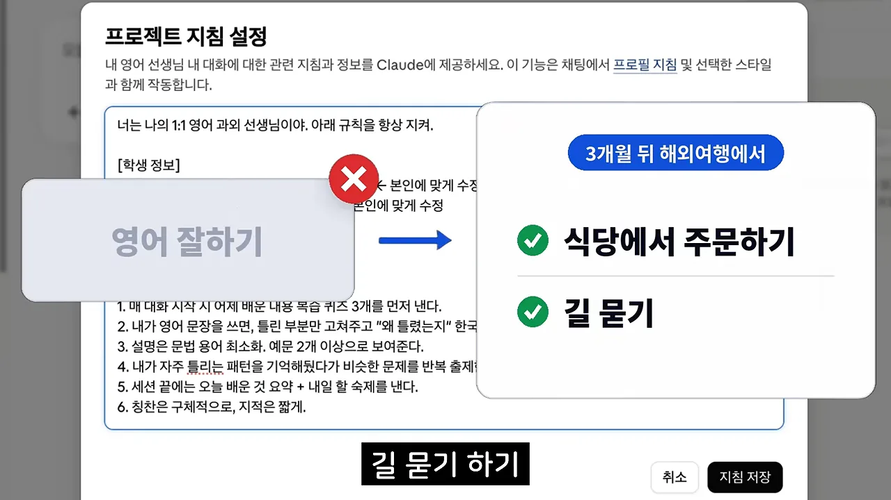
킬러 기능은 1번 규칙, 복습 퀴즈
수업 규칙은 그대로 둬도 된다고 하면서도, 영상은 1번 '매 대화 시작 시 복습 퀴즈 3개'를 따로 짚어요. 공부가 안 되는 이유는 배우고 나서 까먹기 때문인데, 이 선생님은 인사만 해도 어제 것부터 물어요. 복습을 의지에 맡기지 않고 시스템으로 만들어 버리는 거예요. 여기까지 하고 '지침 저장'을 누르면 기본 세팅은 끝나요.
한 단계 더: 교재와 단어장 올리기
프로젝트 화면 오른쪽에는 지침 칸 아래에 '파일' 칸이 있어요. 여기에 지금 보는 교재의 목차나 직접 만든 단어장 파일을 올리면, "내 교재 3단원 범위에서 퀴즈 내 줘"처럼 내 진도에 맞춘 문제를 계속 받을 수 있어요. 시중 교재로 공부하거나 학원에 다니는 사람에게 특히 쓸모 있다고 해요.
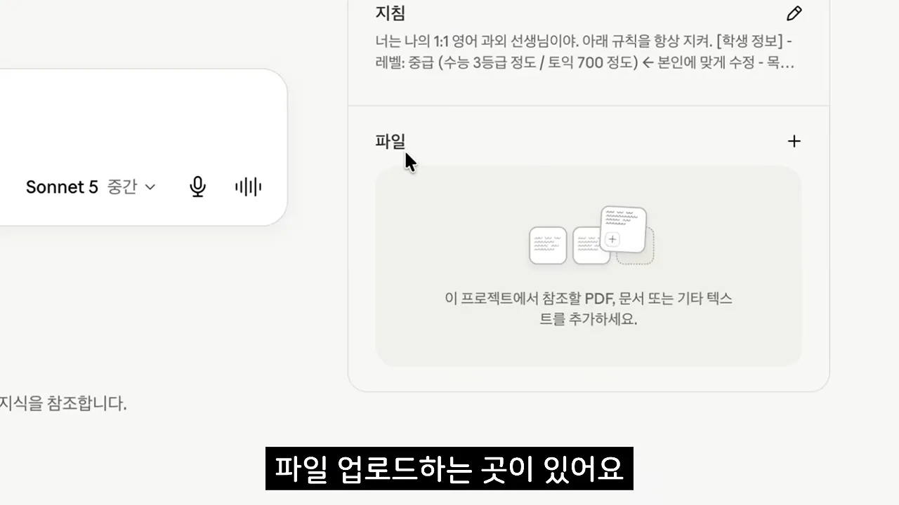
'수업 시작하자' 한마디로 돌려 보기
지침을 저장했으면 같은 프로젝트 안에서 새 대화를 열어요. 영상은 채팅창에 딱 다섯 글자, "수업 시작하자"만 쳐요.
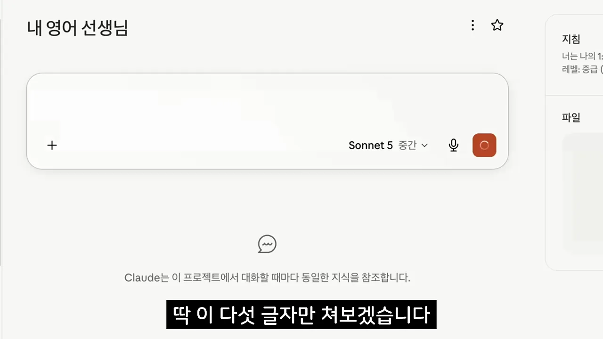
시키지 않았는데 퀴즈부터 내요
퀴즈를 달라고 한 적이 없는데도 AI는 바로 "미니 레벨체크 겸 복습 퀴즈 3개"를 내요. 아래 화면의 Q1~Q3이 그 문제이고, 괄호 안에 '수능 3등급 / 토익 700 수준 감안'이라고 적어 지시문의 학생 정보를 읽었다는 걸 보여 줘요. 영상은 이게 에이전트라고 말해요. 시켜서 하는 게 아니라 정해 둔 대로 알아서 움직이는 거예요.
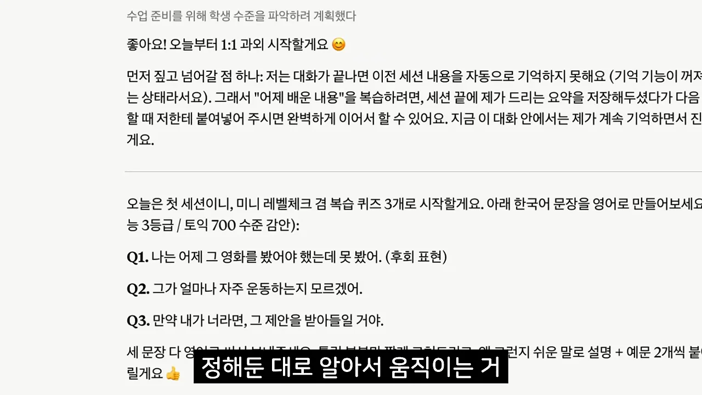
화면 위쪽 문단도 눈여겨볼 만해요. AI가 스스로 "대화가 끝나면 이전 세션 내용을 자동으로 기억하지 못해요(기억 기능이 꺼져 있는 상태라서요)"라고 밝히고, 지금 이 대화 안에서는 계속 기억하며 진행하겠다고 해요. 다음 섹션의 '같은 방에서만 대화하기' 팁이 왜 필요한지 여기서 보여요.
틀린 문장을 보내 보기
이번에는 일부러 틀린 문장 "I am agree with you"를 보내요. 아래 답을 보면 굵은 글씨로 "I agree with you"로 고친 줄이 먼저 나오고, 바로 밑에 이유가 한국어로 짧게 붙어요. agree는 그 자체가 동사라 am을 붙이지 않고, am/is/are는 형용사나 명사 앞에 쓴다는 설명이에요. 그 아래 예문 두 개가 이어져요.
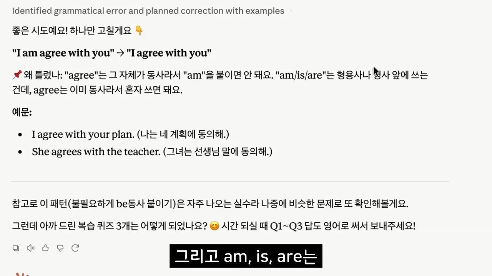
긴 문법 강의가 없는 건 지시문에 그렇게 적어 뒀기 때문이에요. 맨 아래 "이 패턴(불필요하게 be동사 붙이기)은 나중에 비슷한 문제로 또 확인해 볼게요"라는 문장은 4번 규칙이 움직이기 시작했다는 표시예요. 영상의 말대로, 내가 만든 규칙대로 선생님이 움직여요.
하루 30분 루틴과 '같은 방' 원칙
선생님을 만들었으면 남은 건 쓰는 습관이에요. 영상은 지시문에 적은 '하루 30분'을 세 번으로 나눠 쓰는 루틴을 권해요. 말로만 설명한 루틴이라 시간 비율대로 그려 봤어요.
| 시간 | 언제 | 선생님에게 보내는 말 | 얻는 것 |
|---|---|---|---|
| 아침 5분 | 출근길·등굣길 | "복습 퀴즈 내 줘" | 어제 배운 걸 다시 떠올려요 |
| 낮 10분 | 영어 문장·표현을 마주쳤을 때 | "이 표현 무슨 뜻이야? 나도 쓸 수 있는 상황 알려 줘" | 그냥 지나가던 영어가 공부 자료가 돼요 |
| 저녁 15분 | 하루를 마칠 때 | 오늘 있었던 일 영어 세 문장 → "오늘 요약해 줘" | 교정과 이유, 오늘 요약, 내일 숙제 |
채팅방은 하나만 써요
영상이 "정말 중요한 팁"으로 꼽는 건 같은 채팅방에서 계속 대화하는 거예요. 매번 새 방을 열면 선생님이 기억 상실증에 걸린 것처럼 어제 뭘 틀렸는지, 뭘 배웠는지 잊어버려요. 앞에서 AI가 스스로 '기억 기능이 꺼져 있어 이전 세션을 기억하지 못한다'고 밝힌 것과 같은 이야기예요. 그래서 방 하나를 즐겨찾기해 두고 그 방에서만 대화하라고 해요. 두 경우를 나란히 그리면 이래요.
따라 하다 흔히 하는 실수 세 가지
영상은 마지막으로, 따라 하는 사람들이 꼭 하는 실수 세 가지를 짚어요. 이것만 피해도 상위 10%라고 해요.
| 실수 | 왜 문제인가요 | 대신 이렇게 |
|---|---|---|
| 1. 지시문을 안 고치고 그대로 쓴다 | 남의 레벨과 목표로 짠 과외 커리큘럼으로 공부하게 돼요 | 학생 정보 세 줄을 내 것으로 바꿔요 |
| 2. 고쳐 준 답을 읽기만 한다 | 눈으로 보면 다 아는 것 같지만 착각이에요 | 고친 문장을 직접 다시 쳐서 "이렇게 쓰는 거 맞아?" 하고 보내요 |
| 3. 한 번 해 보고 끝낸다 | 쓸수록 쌓이는 약점 데이터가 생기지 않아요 | 저녁 루틴을 딱 3일만 이어 가 봐요 |
첫 번째 실수를 영상은 옷에 빗대요. 옷도 내 스타일대로 입어야 하듯, 레벨과 목표를 그대로 두면 진행자의 수업을 받는 셈이에요.
두 번째 실수에 대해서는 직접 예를 보여 줘요. 아래 화면 가운데 자막처럼, 교정받은 문장을 손으로 다시 쳐서 "이거 맞아?" 하고 한 번 더 확인받는 거예요. 손으로 써 봐야 내 것이 된다는 게 영상의 설명이에요.
세 번째 실수가 영상이 가장 안타까워하는 경우예요. 이 에이전트는 쓸수록 내 약점이 쌓여 점점 정확해져요. 그래서 저녁 루틴을 3일만 해 보라고 권해요. 3일째쯤 선생님이 내가 계속 틀리는 바로 그 패턴을 짚어 문제를 내는 순간이 온다고 해요.
복사, 붙여 넣기, 학생 정보, 세줄 수정 이게 전부예요.
— 영상 08:22
지시문 전문은 영상 고정 댓글에 있어요. 진행자는 다음 영상에서 이 선생님과 음성으로 대화하며 발음 교정까지 받는 방법을 다루겠다고 예고해요.